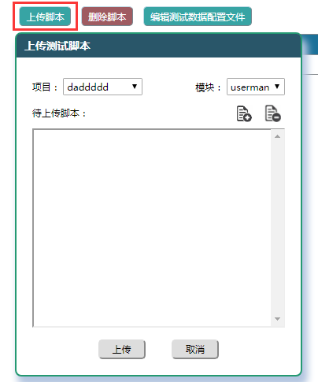
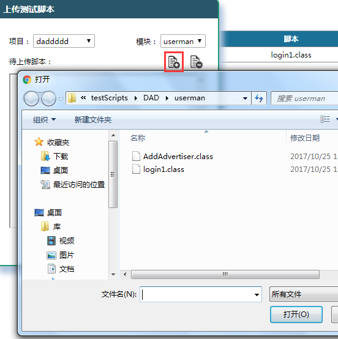
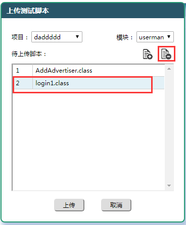
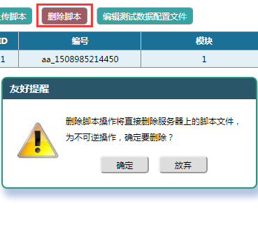

上传：用户在本地完成测试脚本的开发和调试后可以将编译后的文件（例如Java脚本为.class类文件）上传到服务器的指定目录下（通过项目和模块确定，见2.1章节）。上传脚本时可以一次选择多个文件，但必须位于同一个目录下，上传的文件最大不能超过10M。上传脚本的步骤如下图
数据文件：上传脚本的同时也可以将用户自定义的测试数据文件（用于数据驱动等需求，将由脚本直接读取使用）上传到服务器，但要求是该数据文件必须为文本格式（如.txt,.xml等），文件名称（不含后缀）必须与脚本相同，且上传到同一个目录下，拥有数据文件的脚本，在'配置文件'字段标注为'有'。
删除：上传后的脚本目录将按照项目、模块分类显示在页面上。上传后的脚本也可以被删除，但该操作是不可逆的，删除需要慎重，被测试集引用的脚本不能被删除，被测试集引用的脚本在'使用状态'字段被设置为'被调用'，否则为'闲置'。
|
1. 点击'上传脚本'按钮，打开上传窗口。

|
2. 指定上传的项目和模块，点击'选择脚本'按钮（红框）打开文件选择器。

|
3. 选择的文件会显示在上传列表中，点击删除按钮可以移除选中的文件。

|
4. 点击上传按钮上传文件，成功后会弹出提示并显示在页面（数据文件不显示）。删除脚本时会弹出提醒信息。

|